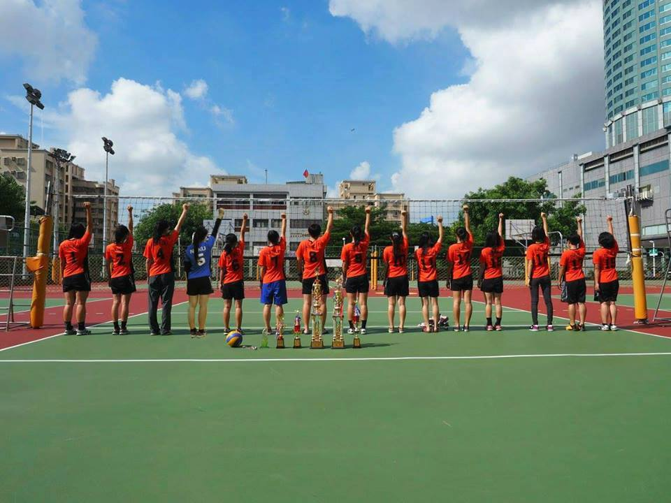
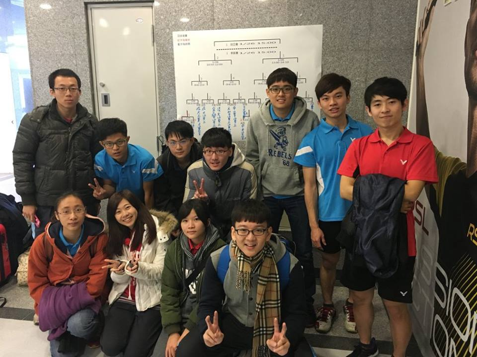
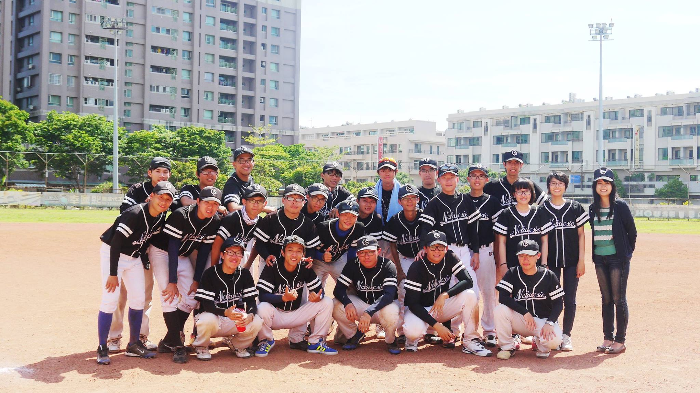

男籃介紹 想在場上自在穿梭切入行雲流水? 還是三分線外嚴防之下百步穿楊? 實力不是天生，努力才能生存 無論你是否有球隊背景，或者擔心球齡過低 只要有分籃球狂熱和練習精神 都歡迎加入資工男籃，一起為夥伴們而戰吧! 戰績 2011 大資盃季軍 系際盃亞軍 2012 南資盃冠軍 Andl盃冠軍 2013 工院盃亞軍 南資盃冠軍 大資盃亞軍 2014 大資盃冠軍 工院盃季軍 南資盃亞軍 2015 南資盃殿軍 南霸天季軍 女籃介紹 這裡沒有宅宅，但有一群愛籃球的女孩！ 一個禮拜平均練兩次球，隊友們互相幫忙激勵。 大伙兒平常嘻笑打鬧，但遇到比賽， 場上努力拚戰，場下奮力加油吶喊！ 當然少不了吃宵、隊出遊、隊聚、慶功宴， 還會來個晨唱，互相連絡感情。 開心打球，卻不失對籃球的認真態度， 這，就是我們！ 別害怕 有我在 你的夢想左右 再熱血一次的機會 或許還在心底 想和我們一起揮汗一起奔馳嗎 別猶豫，就讓我們一起並肩 我們是成大資工女籃，我們等你 戰績 101學年：大資盃亞軍 南資盃冠軍 系際盃季軍 102學年：南資盃季軍 大資盃季軍 103學年：南資盃殿軍 系聯盃冠軍 104學年：工院盃亞軍 南資盃亞軍 系際盃殿軍 男排介紹 在球場上盡情揮灑汗水的熱血， 在網子上方居高臨下的愉悅， 扣球瞬間的強烈快感， 成功救球的那份刺激， 團隊合作拿下難能可貴的一分， 練就一身強健敏捷的好體格， 加入我們系男排的行列， 絕對是充實你大學四年最好的選擇！ 練球時間：週二、五晚上 18:00~21:00 戰績 2016 系際盃冠軍 2016 大資盃季軍 2016 工院盃季軍 2015 南資盃冠軍 2015 工院盃殿軍 女排介紹 上大學後想好好的運動卻怕找不到人陪嗎? 想吃美食卻不知道往哪去嗎? 怕課業不如預期理想嗎? 那就加入系女排吧 多個願望一次滿足 在愉快的氣氛中提升球技 也不乏一起吃飯培養感情 在喊聲中表現最好的自己 資訊女排 等你！ 戰績 2014新生盃季軍 成大女子排球聯賽殿軍 冬季成功盃亞軍 2015大資盃季軍 工院盃亞軍 春季成功盃冠軍 系際盃亞軍 南資盃亞軍 成大女子排球聯賽亞軍 冬季成功盃冠軍 2016系聯盃季軍 大資盃亞軍 春季成功盃冠軍 系際盃季軍  桌球介紹 在亮眼成績背後是流過無數的汗水與數不盡的練習 ~ 享受對決時互相回擊的緊張與刺激感 在每一步踏出的瞬間 出拍 重重的滑過拍面 感受球的軌跡與旋轉 劃出一道漂亮弧形 在扎實穩穩的落在桌上 ~ 愛上桌球 加入系桌 你還在等什麼？！ 系桌銘 切不在深，過網則行。球不用快，會旋則靈。 對方發球，務必看清。有時發的轉，有時切的輕。 雙打衝中路，走位要細心。可以打比賽，拿獎金。 無風雨之亂入，無太陽之勞形。 隊聚吃飽飽，隊費收的輕。 教練曰：「你腳要動啊！！！」 by飲冰室。雜魚 戰績 2009 成大工院盃 季軍 2009 南資杯 亞軍 2009 成大系際盃 季軍 2010 全國大專院校資訊相關系所桌球錦標賽 季軍 2011 南資杯 季軍 2012 南資盃 冠軍 2015 南資盃 亞軍 2016 大資盃 八強 2016 南資杯 季軍 羽球介紹  你/妳想打羽球嗎？ 想要變得更強嗎？ 那就加入系羽吧！ 就算沒有經驗、沒有基礎 只要你/妳喜歡羽球、想打羽球 我們都很歡迎！ 戰績 2004 大資盃冠軍 工院盃季軍 2005 工院盃亞軍 南資盃季軍 2006 南資盃冠軍 2008 工院盃亞軍 2009 工院盃亞軍 南資盃季軍 2010 大資盃亞軍 南資盃冠軍 2015 大資盃八強 南資盃冠軍 2016 大資盃八強 南資盃冠軍 網球介紹 熱愛網球嗎? 那你一定不能錯過資訊X會計系網CAT! 和學長姐一起度過在網球場上練球切磋的歡樂時光 正拍、反拍、發球、扣球、截擊， 學習各式各樣的技巧 不管是有經驗還是初學者都熱烈歡迎! 就算不能像費德勒一樣強，也會多幾分帥氣喔~ 壘棒介紹  109的學弟妹們，還記得電影KANO裡， 所有人一起為棒球熱血奮鬥的感動嗎? 歡迎你們加入資訊系棒，一起在球場上熱血揮汗 系棒的氣氛相當融洽，沒有明顯的階級分別 學長學弟常常玩在一塊，一起大聲唱加油歌 而且我們棒壘球都有打喔 練球的時候學長們會耐心地教導基本動作 所以沒有碰過棒壘球的人也可以來喔 只要你有一顆積極的心，就是系棒最需要的球員 練球時間 周三早上16:00~18:30 週五15:00~18:30